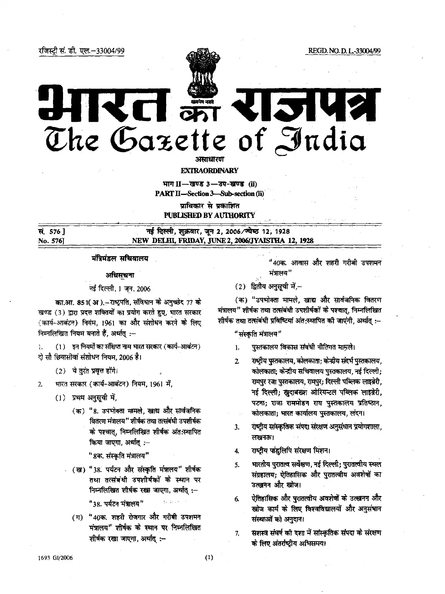
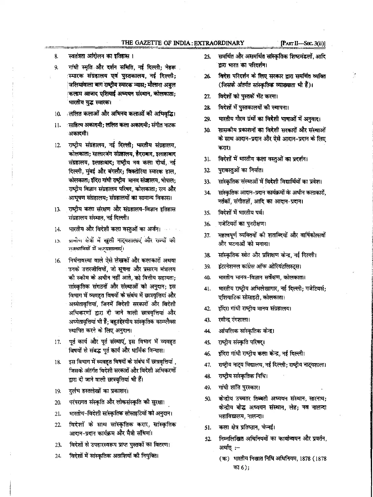
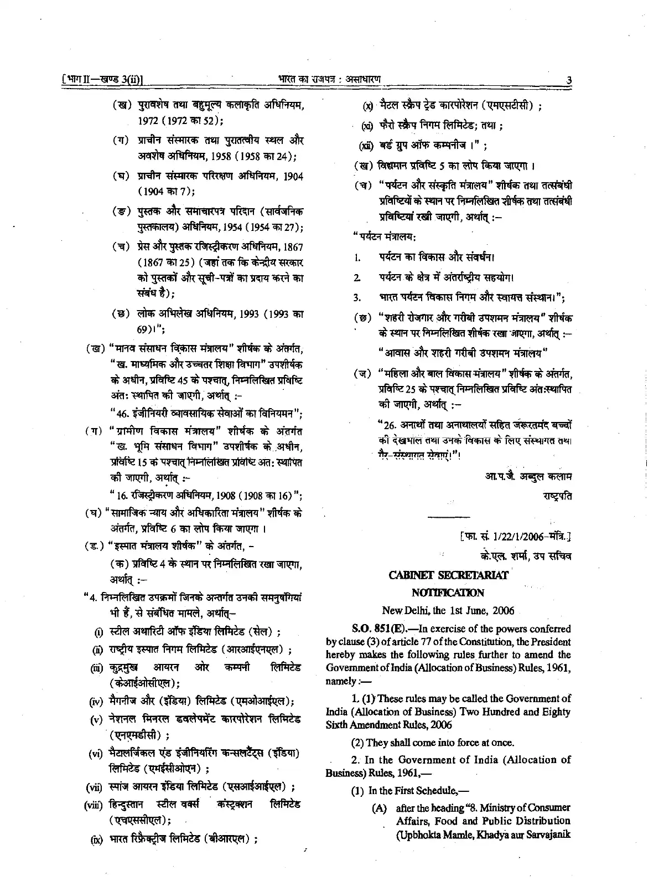
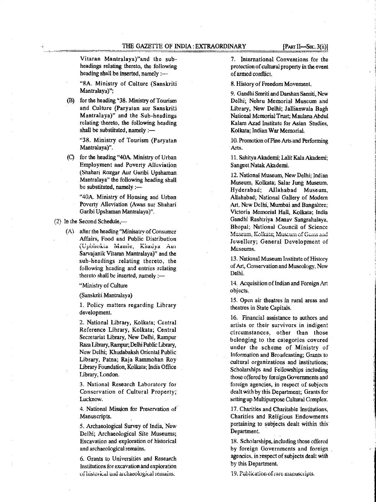
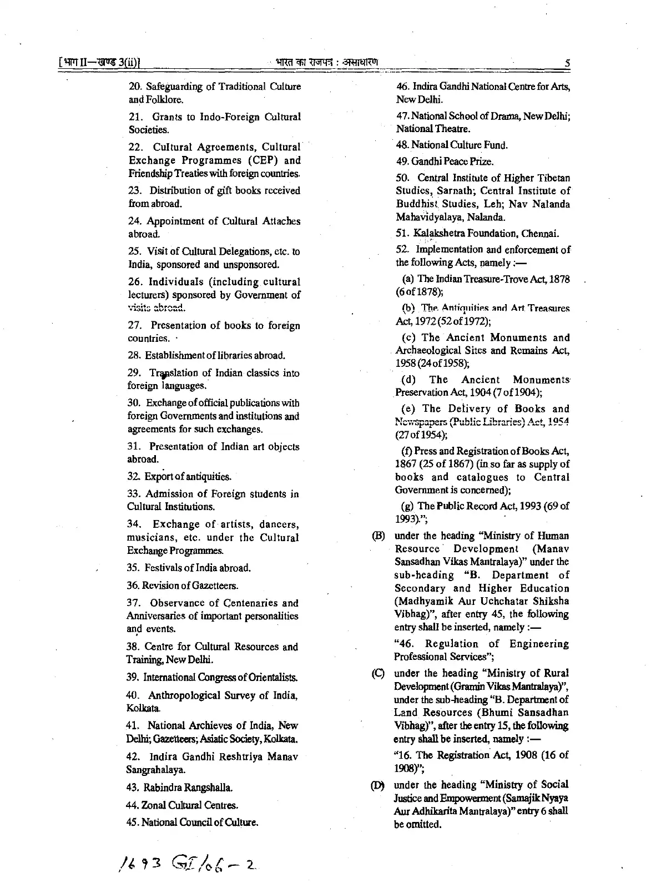
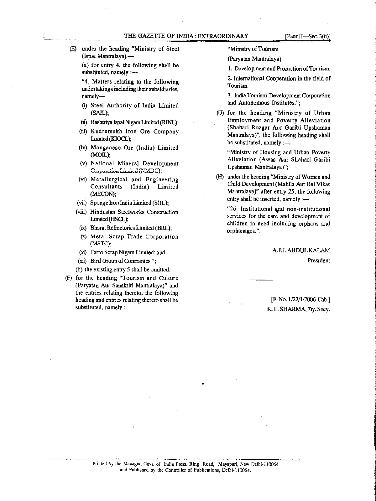

Amendment #286 (S.O. 851(E), 2006)
12 changes: 3 to the First Schedule, 9 to the Second Schedule. 12 applied
What it did to the ministries
- spun offMinistry of Tourism is separated from Ministry of Tourism and Culture (3 subjects) change 1, 2, 4, 10 · histories: Culture, Tourism
- renamedMinistry of Tourism and Culture is renamed Ministry of Culture change 1, 2, 4 · histories: Culture
- renamedMinistry of Urban Employment and Poverty Alleviation is renamed Ministry of Housing and Urban Poverty Alleviation change 3, 11 · histories: Housing & Urban Poverty
The order, page by page
Page 1 of 6

Page 2 of 6

Page 3 of 6

1after Schedule 1 › Ministry of Consumer Affairs, Food and Public Distribution
- 8A. Ministry of Culture
applied at schedule 1 › ministry 8A in the Rules after #286
Page 4 of 6

234Schedule 1 › Ministry of Tourism and Culture
- 38. Ministry of Tourism
applied at schedule 1 › ministry 38 in the Rules after #286
Schedule 1 › Ministry of Urban Employment and Poverty Alleviation
- 40A. Ministry of Housing and Urban Poverty Alleviation
applied at schedule 1 › ministry 40A in the Rules after #286
after Schedule 2 › Minisatry of Consumer Affairs, Food and Public Distribution
- Ministry of Culture (Sanskriti Mantralaya)
- 1. Policy matters regarding Library development.
- 2. National Library, Kolkata; Central Reference Library, Kolkata; Central Secretariat Library, New Delhi, Rampur Raza Library, Rampur, Delhi Public Library New Delhi; Khudabaksh Oriental Public Library, Patna; Raja Rammohan Roy Library Foundation, Kolkata; India Office Library, London.
- 3. National Research Laboratory for Conservation of Cultural Property Lucknow.
- 4. National Mission for Preservation of Manuscripts.
- 5. Archaeological Survey of India, New Delhi; Archaeological Site Museums Excavation and exploration of historical and archaeological remains.
and 55 more
- 6. Grants to Universities and Research Institutions for excavation and exploration of historical and archaeological remains.
- 7. International Conventions for the protection of cultural property in the event of armed conflict.
- 8. History of Freedom Movement.
- 9. Gandhi Smriti and Darshan Samiti, New Delhi; Nehru Memorial Museum and Library, New Delhi; Jallianwala Bagh National Memorial Trust; Maulana Abdul Kalam Azad Institute for Asian Studies Kolkata; Indian War Memorial.
- 10. Promotion of Fine Arts and Performing Arts.
- 11. Sahitya Akademi; Lalit Kala Akademi Sangeet Natak Akademi.
- 12. National Museum, New Delhi; Indian Museum, Kolkata; Salar Jung Museum Hyderabad; Allahabad Museum Allahabad; National Gallery of Modern Art, New Delhi, Mumbai and Bangalore Victoria Memorial Hall, Kolkata; India Gandhi Rashtriya Manav Sangrahalaya Bhopal; National Council of Science Museum,…
- 13. National Museum Institute of History of Art, Conservation and Museology, New Delhi.
- 14. Acquisition of Indian and Foreign Art objects.
- 15. Open air theatres in rural areas and theatres in State Capitals.
- 16. Financial assistance to authors and artists or their survivors in indigent circumstances, other than those belonging to the categories covered under the scheme of Ministry of Information and Broadcasting; Grants to cultural organizations and institutions Scholarships and Fellowships including…
- 17. Charities and Charitable Institutions Charities and Religious Endowments pertaining to subjects dealt within this Department.
- 18. Scholarships, including those offered by foreign Governments and foreign agencies, in respect of subjects dealt with by this Department.
- 19. Publication ofiare manuscripts.
- 20. Safeguarding of Traditional Culture and Folklore.
- 21. Grants to Indo-Foreign Cultural Societies.
- 22. Cultural Agreements, Cultural Exchange Programmes (CEP) and Friendship Treaties with foreign countries.
- 23. Distribution of gift books received from abroad.
- 24. Appointment of Cultural Attaches abroad.
- 25. Visit of Cultural Delegations, etc. to India, sponsored and unsponsored.
- 26. Individuals (including cultural lecturers) sponsored by Government of visits abroad.
- 27. Presentation of books to foreign countries. .
- 28. Establishment of libraries abroad.
- 29. Translation of Indian classics into foreign languages.
- 30. Exchange of official publications with foreign Governments and institutions and agreements for such exchanges.
- 31. Presentation of Indian art objects abroad.
- 32. Export of antiquities.
- 33. Admission of Foreign students in Cultural Institutions.
- 34. Exchange of artists, dancers musicians, etc. under the Cultural Exchange Programmes.
- 35. Festivals of India abroad.
- 36. Revision of Gazetteers.
- 37. Observance of Centenaries and Anniversaries of important personalities and events.
- 38. Centre for Cultural Resources and Training, New Delhi.
- 39. International Congress of Orientalists.
- 40. Anthropological Survey of India Kolkata.
- 41. National Archieves of India, New Delhi; Gazetteers; Asiatic Society, Kolkata.
- 42. Indira Gandhi Reshtriya Manav Sangrahalaya.
- 43. Rabindra Rangshalla.
- 44. Zonal Cultural Centres.
- 45. National Council of Culture. S
- 46. Indira Gandhi National Centre for Arts New Delhi.
- 47. National School of Drama, New Delhi National Theatre.
- 48. National Culture Fund.
- 49. Gandhi Peace Prize.
- 50. Central Institute of Higher Tibetan Studies, Sarnath; Central Institute of
- 2. Buddhist Studies, Leh; Nav Nalanda Mahavidyalaya, Nalanda.
- 51. Kalakshetra Foundation, Chennai.
- 52. Implementation and enforcement of the following Acts, namely :—
- a. The Indian Treasure-Trove Act, 1878 (6 of 1878)
- b. The Antiquities and Art Treasures Act, 1972 (52 of 1972)
- c. The Ancient Monuments and Archaeological Sites and Remains Act 1958 (24 of 1958)
- d. The Ancient Monuments Preservation Act, 1904 (7 of 1904)
- e. The Delivery of Books and Newspapers (Public Libraries) Act, 1954 (27 of 1954)
- f. Press and Registration of Books Act 1867 (25 of 1867) (in so far as supply of books and catalogues to Central Government is concerned)
- g. The Public Record Act, 1993 (69 of 1993).
applied at schedule 2 › ministry Ministry of Culture in the Rules after #286
read page break, states inferred loose
Page 5 of 6

567after Schedule 2 › Ministry of Human Resource Development › Department of Secondary and Higher Education › entry 45
- 46. Regulation of Engineering Professional Services
applied at schedule 2 › ministry MINISTRY OF HUMAN RESOURCE DEVELOPMENT › department B › entry 46 in the Rules after #286
after Schedule 2 › Ministry of Rural Development › Department of Land Resources › entry 15
- 16. The Registration Act, 1908 (16 of 1908)
applied at schedule 2 › ministry MINISTRY OF RURAL DEVELOPMENT › department B › entry 16 in the Rules after #286
Schedule 2 › Ministry of Social Justice and Empowerment › entry 6
applied at schedule 2 › ministry MINISTRY OF SOCIAL JUSTICE AND EMPOWERMENT › part IV › entry 6 in the Rules after #286
Page 6 of 6

89101112Schedule 2 › Ministry of Steel › entry 4
- i. Steel Authority of India Limited (SAIL)
- ii. Rashtriya Ispat Nigam Limited (RINL)
- iii. Kudremukh Iron Ore Company Limited (KIOCL)
- iv. Manganese Ore (India) Limited (MOIL)
- v. National Mineral Development Corporation Limited (NMDC)
- vi. Metallurgical and Engineering Consultants (India) Limited (MECON)
and 5 more
- vii. Sponge Iron India Limited (SIIL) (viii) Hindustan Steelworks Construction Limited (HSCL)
- ix. Bharat Refractories Limited (BRL)
- x. Metal Scrap Trade Corporation (MSTC):
- xi. Ferro Scrap Nigam Limited; and
- xii. Bird Group of Companies.
applied at schedule 2 › ministry MINISTRY OF STEEL › entry 4 in the Rules after #286
Schedule 2 › Ministry of Steel › entry 5
applied at schedule 2 › ministry MINISTRY OF STEEL › entry 5 in the Rules after #286
Schedule 2 › Tourism and Culture
- Ministry of Tourism (Paryatan Mantralaya)
- 1. Development and Promotion of Tourism.
- 2. International Cooperation in the field of Tourism.
- 3. India Tourism Development Corporation and Autonomous Institutes.
applied at schedule 2 › ministry MINISTRY OF TOURISM AND CULTURE in the Rules after #286
states inferred loose
Schedule 2 › Ministry of Urban Employment and Poverty Alleviation
- Ministry of Housing and Urban Poverty Alleviation (Awas Aur Shahari Garibi Upshaman Mantralaya)
applied at schedule 2 › ministry Ministry of Housing and Urban Poverty Alleviation (Awas Aur Shahari Garibi Upshaman Mantralaya) in the Rules after #286
after Schedule 2 › Ministry of Women and Child Development › entry 25
- 26. Institutional and non-institutional services for the care and development of children in need including orphans and orphanages.
applied at schedule 2 › ministry MINISTRY OF WOMEN AND CHILD DEVELOPMENT › entry 26 in the Rules after #286
How this document was read
Changes placed by an inference rule
| Change | Rule | Status | What |
|---|---|---|---|
| 4 | loose | accepted | change 4: ministry Minisatry of Consumer Affairs, Food and Public Distribution taken for ministry MINISTRY OF CONSUMER AFFAIRS, FOOD AND PUBLIC DISTRIBUTION, named loosely |
| 10 | loose | accepted | change 10: ministry Tourism and Culture taken for ministry MINISTRY OF TOURISM AND CULTURE, named loosely |
From the Government of India (Allocation of Business) Rules, 1961 and their amendments, as published by the Cabinet Secretariat (cabsec.gov.in), read by orgpedia. The readings of the older scanned gazettes have known gaps.